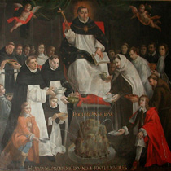

|  |
|---|
[87982] De secreto, q. 1 arg. Prima quaestio fuit, si frater unus accusat alterum, vel alium de peccato occulto quod probari non potest, vel quod non scitur nisi ab accusato vel ab accusante; potest ne accusato praelatus praecipere ut coram accusante dicat veritatem; et utrum accusatus teneatur se prodere propter praeceptum. Quod si fecerit, et vinci poterit per duos, scilicet praelatum et accusatum, et ita publicabitur occultum.
[87983] De secreto, q. 1 ad arg. Respondeo dicendum, quod praelatus non debet praecipere, et peccat graviter si praecipit, nec accusatus tenetur respondere, quia non tenetur se pandere et manifestare.
[87984] De secreto, q. 2 arg. Secunda quaestio fuit: utrum in praedicto casu, praelatus accusato debeat seorsum praecipere ut sibi soli dicat veritatem.
[87985] De secreto, q. 2 ad arg. Respondeo dicendum, quod non debet praecipere, nec alter tenetur respondere, quia occulta relinquuntur divino iudicio, manifesta humano; quare in occultis non potest esse homo iudex: et ita nec praecipere nec procedere potest nisi iudex, nec alter tenetur obedire.
[87986] De secreto, q. 3 arg. Tertia quaestio fuit: si aliquis accusat aliquem de aliquo crimine quod ipse solus scit, vel quod probare non potest, utrum praelatus debeat inquirere, vel praecipere, ut in capitulo dicat veritatem coram omnibus; et utrum accusatus teneatur confiteri coram praelato propter praeceptum.
[87987] De secreto, q. 3 ad arg. Respondeo dicendum ut supra, et multo fortius, quod praelatus non debet praecipere, et si praecipiat, graviter peccat, nec alter tenetur se pandere; sed dicat: probet quod dicit accusans, aliter peto iustitiam de indebita accusatione; vel aliquid huiusmodi respondeat; vel taceat: quia in occultis non est homo iudex, ut dictum supra, quaest. II.
[87988] De secreto, q. 4 arg. Quarta quaestio fuit: utrum commissa sub secreto teneatur subditus revelare ad praeceptum praelati.
[87989] De secreto, q. 4 ad arg. Respondendum quod si ex receptione secreti periculum praeeminet scandali et ruinae, vel gravis praeiudicii, vel damni communitatis, cui potest obviari per revelationem secreti, potest in hoc casu praecipere, et alter tenetur revelare: quia maius malum praeponderat minori bono. Unde si maius malum sequitur ex observatione percepti secreti, quam ex revelatione, non debet servari secretum, maxime ubi exigitur per praeceptum: quia sicut iuramentum non est vinculum iniquitatis, ut ait Augustinus, sic secreti promissio non debet esse vinculum iniquitatis aut velamen. Si autem ex observatione secreti nullum imminet periculum aut scandalum, vel aliquid praedictorum, nec debet praecipere nec subditus tenetur, vel debet per praeceptum revelare secretum ubi nullum imminet periculum alicuius gravis, ut dictum est supra: quia si immineret, non fideliter, sed contra fidem teneretur secretum, in magnum praeiudicium aliorum. Haec autem quae dicta sunt de non praecipiendo, et non revelando secretum, intelligenda sunt, ut dicunt magistri praedicti, ubi fama vel infamia non praecessit, quia ubi talis fama praecessit, quod de crimine fieret inquisitio in foro iudiciali, vel contentioso, potest praelatus praecipere et inquirere et exigere iuramentum.
[87990] De secreto, q. 5 arg. Quaestio quinta talis fuit: aliquis dicit in confessione mala periculosa alterius, dans licentiam confessori ut illi praelato denuntiet, tacito nomine confitentis. Item ex alia parte traditur una littera sub secreto occulto ipsi confessori, in qua eadem continentur denuntianda quae in confessione sunt dicta; proceditur ad inquisitionem, tandem invenitur per confessionem delati sive accusati, veram fuisse denuntiationem: post hoc praelatus volens scire unde habuit ortum denuntiatio, praecipit illi confessori, unde ipse habuit litteram illam, quam extra confessionem receperat. Alter respondet: licet extra confessionem receperim, tamen sub secreto recepi, nec potest manifestari praelato, quin prodatur peccatum confessum, et praelato confessa sunt illa quae denuntiata erant, et hoc asserit confessor, quia certum est sibi quod dicitur. Quaeritur ergo utrum debeat praecipere praelatus, et ille obedire, vel utrum praelatus debeat credere dicenti.
[87991] De secreto, q. 5 ad arg. Respondeo praelatus non debet praecipere, nec ille tenetur obedire, non solum ratione confessionis quam revelare se crederet, sed ratione secreti sub quo accepit; et maxime in proposito, nulla est quaestio, ubi constat denuntiationem veram fuisse, nec timetur periculum, nec aliquod grave imminere. In tali enim casu non licet secretum extra confessionem inquirere, vel revelare. Frater Thomas autem dicebat, quod si iudicialiter agatur, scilicet si accusans dicit se probaturum, vel obligat se ad poenam talionis, praelatus potest inquirere per praeceptum, et ille tenetur obedire, et respondere sicut iudici veritatem, quia ubi saecularis iudex potest exigere iuramentum, praelatus religiosus potest dare praeceptum. Sed contra hoc obiicitur, quod in occultis non est homo iudex, sed solus Deus, et iura volunt quod si aliquis iurat ad praeceptum iudicis de dicenda veritate, non astringitur huiusmodi iuramento dicere veritatem de occultis, scilicet de iis quae probari non possunt, quia talia dicuntur in iure occulta, quae probari non possunt. Igitur videtur quod talis non tenetur se pandere propter praelati praeceptum, nec esse propter iuramentum a iudice requisitum. Unde in hoc sententia eius non concordat sententiae aliorum magistrorum.
[87992] De secreto, q. 6 arg. Sexta quaestio fuit: aliquod factum malum est accidens, sed nescitur quis fecerit, verbi gratia furtum est in domo, vel domus combusta est, vel aliquid huiusmodi, potest ne praelatus inquirere per praeceptum, et ille qui fecerit, revelare?
[87993] De secreto, q. 6 ad arg. Respondeo: dixit frater Thomas quod potest praelatus praecipere in genere sic: praecipio, ut qui hoc fecit, vel scit, tenetur dicere. In hoc non concordant alii magistri cum fratre Thoma de Aquino.